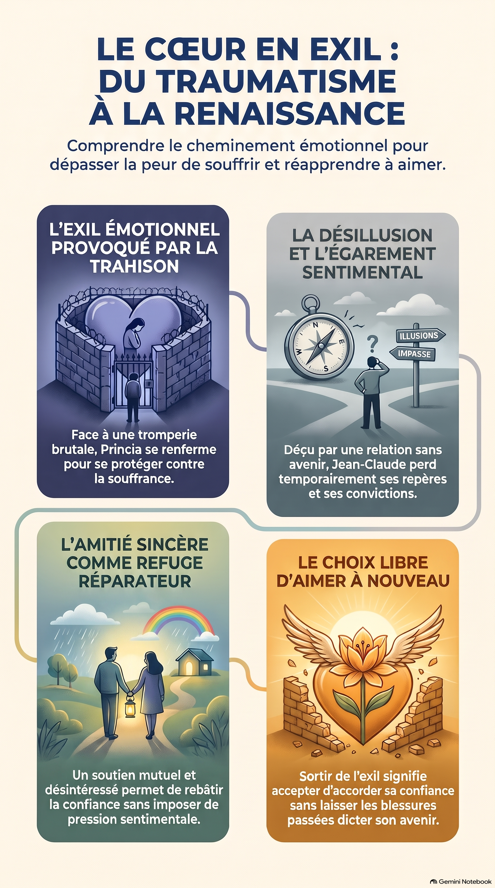

LE CŒUR EN EXIL
Quand aimer devient une peur
Peut-on encore aimer lorsque le cœur a été profondément blessé ? Entre trahison, errance sentimentale et reconstruction, découvrez l'histoire poignante de Princia et Jean-Claude au cœur de Paris.

Couverture complète (4ᵉ de couverture, dos et 1ʳᵉ de couverture)
Découvrir un extrait
Plongez dans les premières lignes du roman et découvrez la naissance de l'histoire.
Le rêve de Princia
Depuis son adolescence, Princia nourrissait un rêve auquel elle accordait une importance particulière : rencontrer un jour l'homme avec lequel elle pourrait construire une belle histoire d'amour.
Princia était née en France et avait grandi à Bordeaux, dans le quartier populaire de Saint-Michel, au sein d'une famille congolaise profondément attachée à ses origines. Dans leur foyer, la culture familiale occupait une place naturelle. Les repas, les échanges avec les proches et les souvenirs du Congo entretenaient un lien constant avec le pays de leurs parents. Princia avait ainsi grandi entre deux repères culturels, sans jamais avoir le sentiment de devoir choisir entre eux.
Elle ne voulait pas d'une relation ordinaire. Dans son imagination, l'homme idéal devait réunir plusieurs qualités. Il devait être beau, grand, musclé, avoir le teint clair, prendre soin de son apparence, être élégant, intelligent et surtout savoir s'exprimer avec aisance. Elle aimait les hommes dont la conversation révélait une certaine culture et une intelligence naturelle.
Ses exigences étaient si précises qu'elle avait fini par décourager tous ceux qui tentaient de l'approcher. Certains camarades la trouvaient trop difficile, d'autres la considéraient comme une jeune fille prétentieuse. Mais Princia ne cherchait pas à plaire à tout le monde. Elle préférait attendre plutôt que de s'engager dans une relation qui ne correspondrait pas à ses aspirations.
Elle ignorait encore que la vie lui réservait une rencontre qui allait progressivement transformer sa conception de l'amour.
C'est au lycée qu'elle fit la connaissance de Davy.
Leur lycée se trouvait à Bordeaux, dans un environnement où se côtoyaient des élèves aux origines et aux parcours différents. Pour Princia, cette ville représentait son quotidien : ses rues familières, ses trajets pour se rendre en cours et les lieux où elle retrouvait ses camarades. C'était dans ce décor bordelais, devenu si ordinaire à ses yeux, qu'une rencontre allait prendre une importance inattendue.
Il avait tout ce qui pouvait attirer son attention. Grand, athlétique et toujours impeccablement habillé, il dégageait une assurance naturelle sans paraître arrogant. Sa manière de parler, son calme et son humour lui permettaient de se faire apprécier aussi bien par les élèves que par les enseignants.
Sur le plan scolaire, il était particulièrement brillant. Les mathématiques et la physique semblaient ne lui poser aucune difficulté. Il pouvait passer plusieurs minutes devant un exercice complexe avant d'en trouver la solution avec une facilité déconcertante. En dehors des cours, il pratiquait le judo à haut niveau, une discipline qui avait développé chez lui la rigueur, la maîtrise de soi et la persévérance.
Davy était devenu l'un des élèves les plus populaires de l'établissement.
Pour Princia, il représentait presque la réalisation de son idéal.
Chaque fois qu'elle le croisait dans les couloirs, elle cherchait discrètement son regard. Lorsqu'il lui adressait un sourire, elle détournait parfois les yeux, incapable de dissimuler son trouble.
Elle avait pourtant l'habitude de repousser les garçons qui lui manifestaient leur intérêt. Mais devant Davy, ses certitudes semblaient disparaître.
Un jour, pendant la récréation, elle l'aperçut assis à l'écart, un livre de physique ouvert devant lui. Il semblait absorbé par un exercice portant sur l'énergie cinétique. Plusieurs élèves jouaient dans la cour, tandis que d'autres discutaient près des salles de classe.
Princia hésita quelques secondes avant de s'approcher.
— Bonjour, Davy.
Il leva les yeux et lui adressa un sourire.
— Bonjour, Princia ! Comment vas-tu ?
— Très bien, merci. Tu travailles encore ?
Davy regarda son livre avant de répondre avec amusement :
— J'essaie de résoudre ce problème. Je pense avoir compris la méthode, mais je voudrais vérifier mon raisonnement.
Princia jeta un coup d'œil à l'énoncé.
— Je peux regarder ?
— Bien sûr. Assieds-toi.
Elle prit place à côté de lui. Ils échangèrent quelques remarques sur l'exercice, puis la conversation s'orienta vers les examens de fin d'année qui approchaient.
Davy lui proposa alors de réviser ensemble après les cours.
Princia accepta avec enthousiasme, tout en essayant de ne pas laisser paraître sa joie.
Leurs premières séances de travail furent essentiellement consacrées aux matières scientifiques. Davy expliquait les notions difficiles avec patience, tandis que Princia apportait ses propres connaissances et n'hésitait pas à lui signaler certaines erreurs.
Ils découvrirent rapidement qu'ils formaient une bonne équipe.
Les mathématiques laissèrent progressivement place à la physique, puis à la chimie. Même le français trouva sa place dans leurs révisions.
Mais les séances de travail ne se limitaient plus aux exercices et aux leçons.
Ils commencèrent à parler de leurs familles, de leurs ambitions et de leurs projets d'avenir. Ils échangeaient leurs impressions sur les enseignants, plaisantaient sur certaines situations vécues au lycée et partageaient parfois des confidences qu'ils n'auraient pas faites à d'autres camarades.
Davy découvrit une jeune femme sensible, déterminée et beaucoup plus profonde qu'il ne l'avait imaginé. Derrière sa réserve se cachait une personnalité affirmée, une grande capacité de réflexion et une volonté de réussir.
De son côté, Princia commença à découvrir chez Davy des qualités qu'elle n'avait pas initialement recherchées.
Elle appréciait sa patience, sa simplicité et son attention. Il ne cherchait pas constamment à impressionner les autres. Il savait écouter, reconnaître ses erreurs et plaisanter de lui-même.
Elle comprit peu à peu que l'élégance d'un homme ne se mesurait pas uniquement à sa manière de s'habiller, pas plus que son intelligence ne se résumait à ses résultats scolaires.
Un soir, après une longue séance de révision, ils décidèrent de rentrer ensemble.
En quittant le lycée, ils retrouvèrent l'agitation des rues bordelaises. Les passants se pressaient sur les trottoirs, les transports poursuivaient leurs trajets et la ville semblait suivre son rythme habituel. Pour eux, pourtant, ce retour avait quelque chose de différent. Ils n'étaient plus simplement deux élèves qui partageaient leurs révisions : ils commençaient à apprécier ces moments passés ensemble, même lorsqu'ils n'avaient aucune leçon à étudier.
Sur le chemin, Davy lui parla de ses ambitions et de la vie qu'il souhaitait construire après le lycée. Princia l'écoutait attentivement. Elle se surprit à imaginer un avenir dans lequel leurs deux chemins pourraient continuer à se croiser.
Cette pensée la fit sourire.
Les jours passèrent et leur proximité devint de plus en plus évidente.
Princia attendait désormais leurs rencontres avec impatience. Elle trouvait toujours une raison de prolonger leurs conversations et regrettait chaque fois que venait le moment de se séparer.
Pourtant, une question la préoccupait : Davy éprouvait-il réellement les mêmes sentiments qu'elle ?
Elle avait peur de mal interpréter ses attentions. Elle ne voulait pas compromettre leur complicité en dévoilant trop tôt ce qu'elle ressentait.
Un soir, après une longue séance de révision, alors que les autres élèves avaient déjà quitté les lieux, elle décida de prendre son courage à deux mains.
— Davy, j'aimerais te parler de quelque chose.
Il referma son cahier et se tourna vers elle.
— Je t'écoute.
Princia baissa momentanément les yeux.
— Je ne sais pas vraiment comment te le dire, mais depuis quelque temps, je ressens quelque chose de particulier pour toi. J'aime passer du temps avec toi. J'aime nos conversations et ta présence me fait du bien. Je crois que je suis tombée amoureuse de toi.
Davy resta silencieux quelques secondes. Puis un sourire éclaira son visage.
— Tu sais, Princia, je pensais que tu finirais par comprendre que je ne te considérais pas comme une simple camarade de classe.
Elle releva la tête.
— Tu veux dire que…
— Oui. Je ressens la même chose pour toi.
Princia sentit son cœur battre plus vite. Elle n'osa pas répondre immédiatement. Un sourire discret remplaça son inquiétude.
Ce soir-là, quelque chose venait de changer entre eux.
Leur histoire commençait.
Ce qui les avait d'abord rapprochés était une admiration réciproque. Mais, au fil du temps, cette admiration avait laissé place à une véritable complicité, nourrie par la confiance, le respect et l'affection.
Princia avait enfin le sentiment d'avoir rencontré l'homme dont elle avait longtemps rêvé.
Elle ne savait pas encore que la vie ne se déroulait pas toujours comme on l'imagine.
À cet âge, elle croyait que les sentiments sincères suffisaient à protéger une relation. Elle pensait que deux personnes qui s'aimaient véritablement trouveraient toujours un moyen de préserver leur bonheur.
Elle avait encore tant de choses à découvrir sur l'amour.
Bande-annonce officielle
« Le remède inattendu d’un cœur brisé » — Découvrez l'histoire et le déclic émotionnel qui unissent Princia et Jean-Claude.
Extrait Audio Officiel (12 min)
Écoutez un passage lu exclusif du roman accompagné de la musique d'ambiance.
Du traumatisme à la renaissance
Comprendre le cheminement émotionnel pour dépasser la peur de souffrir et réapprendre à aimer.

1. L'exil émotionnel : Face à une tromperie brutale de son fiancé avec sa meilleure amie, Princia se renferme pour se protéger contre la souffrance.
2. La désillusion : Déçu par une relation sans avenir, Jean-Claude perd temporairement ses repères et ses convictions.
3. L'amitié réparatrice : Un soutien mutuel et désintéressé permet de rebâtir la confiance sans imposer de pression sentimentale.
4. Le choix libre d'aimer : Sortir de l'exil signifie accepter d'accorder sa confiance sans laisser les blessures passées dicter son avenir.